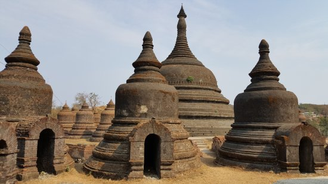
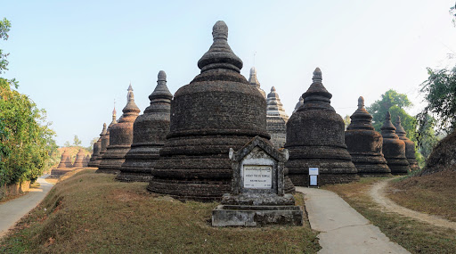
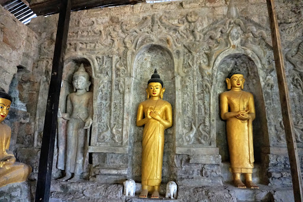
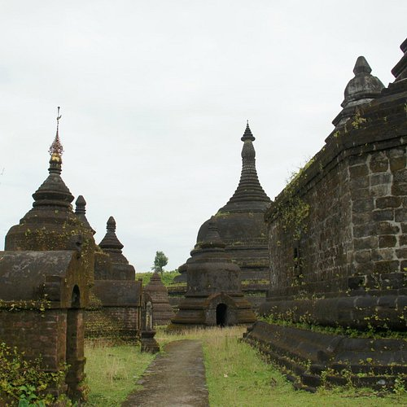
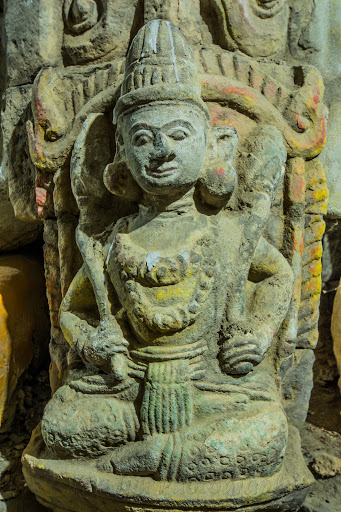
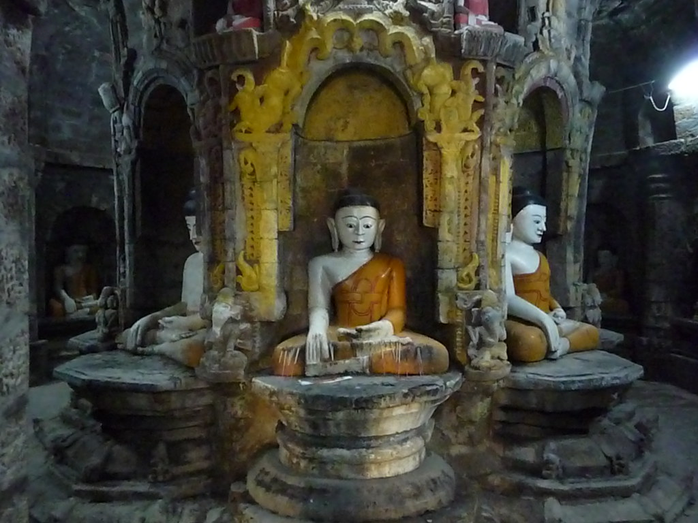
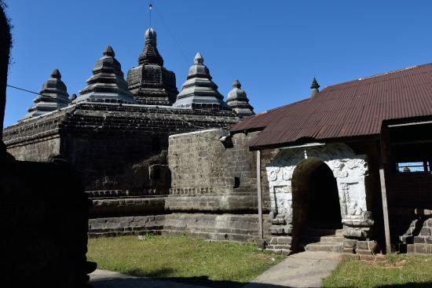
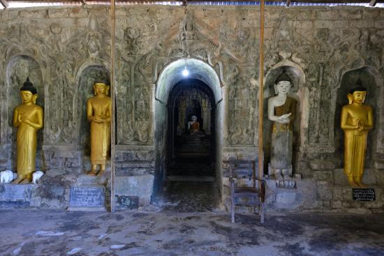

Ann Taw Thein Temple
The Andaw Pagoda of Mrauk U means the Pagoda enshrining the tooth-relic of Buddha. The pagoda is located about
86 feet from the Shittaung Pagoda in the north-east direction. Min Hla Raza was the original builder of this
pagoda in 1521 A.D. Due to some damaged parts. the King of Mrauk U. Minrazagyi reconstructed this pagoda in 1596
A.D. The central tower of the shrine contains the tooth-relic of Buddha. It was originally obtained from Sri
Lanka by King Minbin (1534-1542 A.D.)


The shrine is an octagonal structure of pure sandstone. with two internal concentric passages. Fifteen small
circular pagodas. built of bricks stand on the platforms of south. north and west of the shrine. On the east.
there is a prayer hall. which has an entrance each on the east. north. and south sides. A stonewall divides the
prayer hall from the outer court. The east facade of the shrine measures 31 feet from north to south and is only
14 feet high from the ground to the roof. On each side of the entrance are three niches which get into the wall.
6' high. 1' 2" deep. and 2' wide. and these contain stone images of Buddha. Passing through the vaulted passage
a gallery opens on either side. Each is 3' 7" wide and 9' high.


The gallery runs in an octagonal shape around the central chamber; each of the outer sides of the passage
measures 20' and each contains a row of four niches with a semicircular arch 2' above the ground. and a second
row of smaller niches at the height of 7. four to each side. and the niches hold stone images of Buddha. From
the inner side of the gallery a vaulted passage leads from north. south. east. and west to the inner chamber.
which is also octagonal in shape. At the center stands an eight-cornered stone pillar 40' in circumference. It
supports the roof.


Neither light nor air can penetrate into the shrine except through the front entrance. The roof is about ten
feet thick. Over each of the eight corners of the shrine stands a smaller pagoda. At the center. there stands a
large pagoda.
Andaw Pagoda was wholly constructed with stone blocks stands on a small square-shaped hillock. This hillock
includes the shrine and pagoda. measures 228 feet from east to west and 145 feet from north to south and 42 feet
in height from ground to top.
While Shittaung features three square passages inside the temple. Andaw Thein has two passages around an eight
side pillar. which supports the roof.

